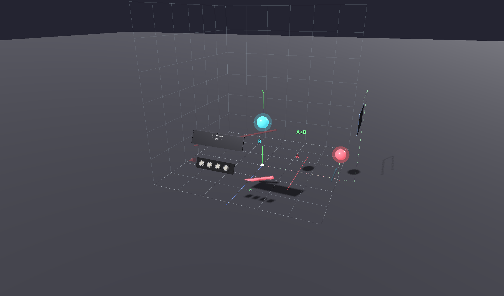
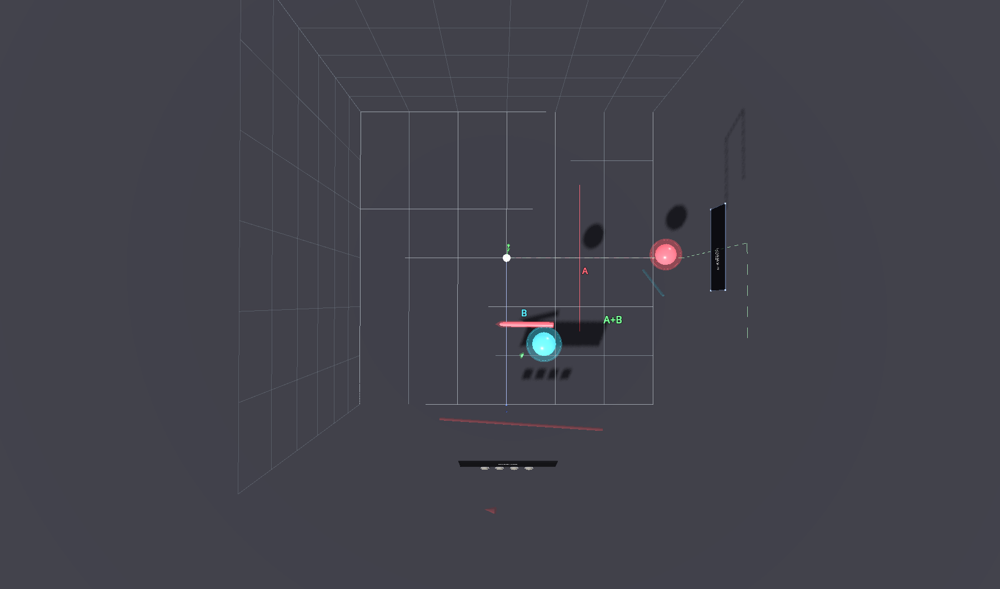
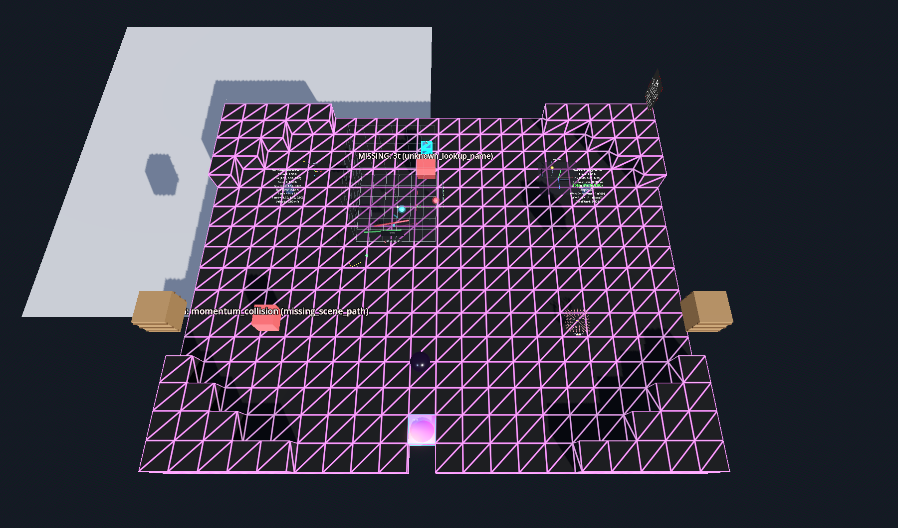
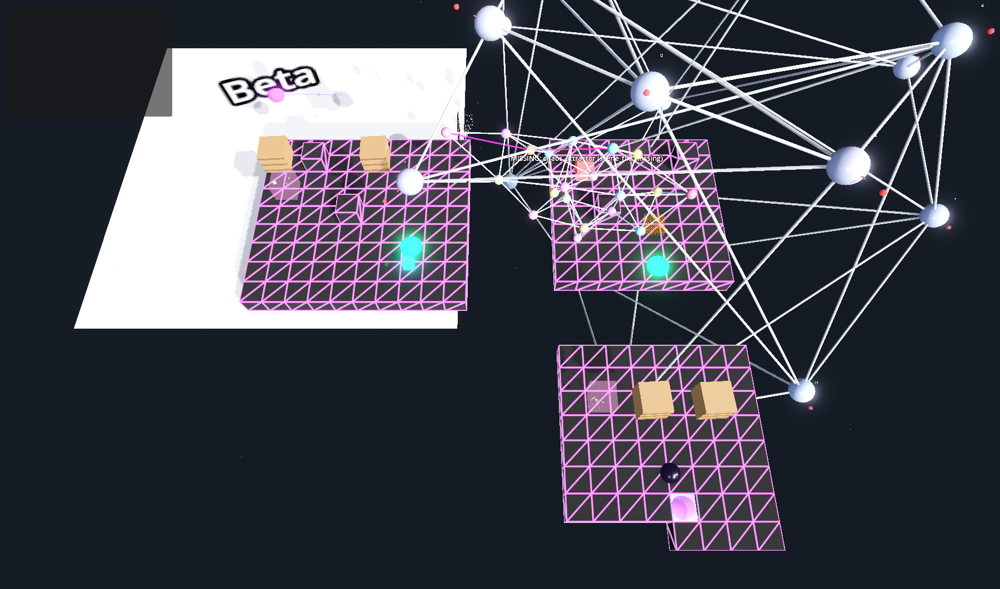
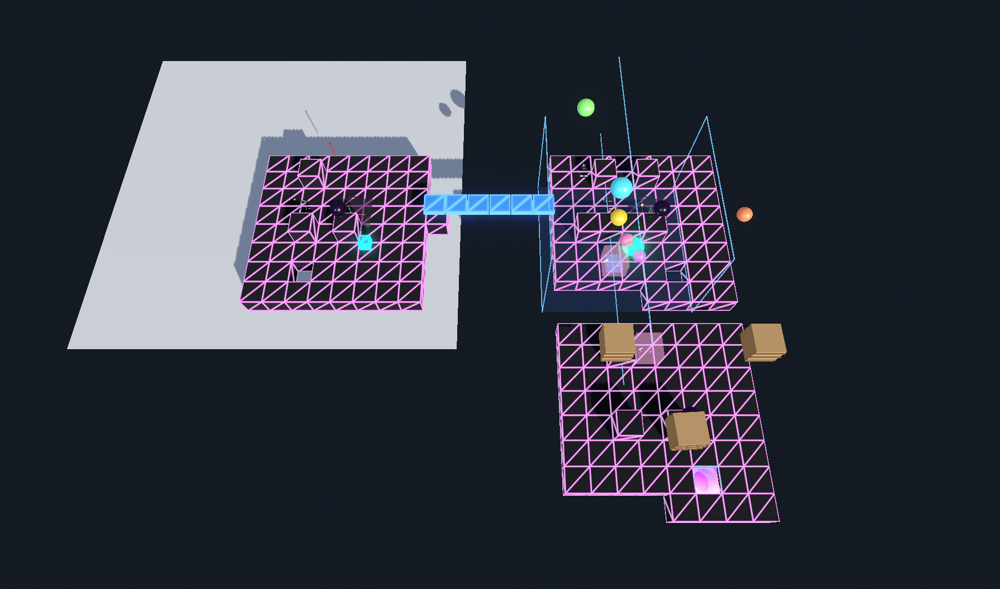

March 30, 2026
Today's session had two threads: redesigning the forces sequence maps, and building Mario-like interactive creatures. Both connect to the same question: how does a player learn physics by being inside it?
The existing vector addition demos are tabletop-scale. You look at them. The new vector_addition_walk is room-scale: a 3-meter coordinate grid you stand inside. The vectors are at body height. You grab the endpoints and walk along the X-axis to feel the X-component.

Front view: 3D grid, vectors A (coral) and B (cyan), result (green)

Top view: floor grid, wall grids, parallelogram construction
Four preset buttons (ORTHO, ACUTE, 3D, RESET) let you snap to canonical configurations. The formula panel updates in real-time as you drag handles. Ghost arrows show the parallelogram construction.
Three maps in the forces sequence were weak:
ForcesComposition was a 14×14 diamond — too cramped for the ideas it holds. Expanded to 20×16 with vector_addition_walk as the centerpiece. Now the narrative flows: enter → walk inside the vector grid → see force composition demos → reflect → exit.
ForcesChaos had two tiny islands floating in void. Redesigned as a 3-island L-shape: n-body systems (NW), chaos attractors (NE), reflection (SE). Jump pads connect the islands — you become the projectile between deterministic systems that produce chaos.
ForcesFoundations had a teleporter bug and duplicate artifacts. Fixed: teleporter on void, dark sphere moved to Island C, duplicate VectorBasics removed.

ForcesComposition: 20x16 with vector_addition_walk

ForcesChaos: 3-island L-shape

ForcesFoundations: 3 islands, fixed
. . .
The existing hazard system is brilliant: origami-themed procedural creatures with single-parameter behavior, personality evolution via the curriculum. But the interaction vocabulary was limited to "shoot and dodge." Mario taught a generation about physics through creature mechanics: stomping, kicking, bouncing. We added three.
A cardboard box with angry yellow eyes. Waddles on patrol, charges when it spots you. Stomp from above to flatten it. The lid hinges open, the body squashes to 10% height.
What it teaches: Attack from above, not head-on. Topology as vulnerability — a box has six faces but only the top is weak.
stomp flatten topologyA green icosahedron with retractable legs. Retracts into its shell when scared. Kick the shell to send it rolling at 6 m/s — it bounces off walls and damages other enemies it hits.
What it teaches: Conservation of momentum. Chain reactions. The kicked shell is a lesson in elastic collisions delivered through play.
kick momentum chain-reactionA red coil spring with a yellow head. Bounces rhythmically. Land on top when compressed to get launched upward — Hooke's law as creature.
What it teaches: F = -kx. Compression stores potential energy. Release converts to kinetic. The player times their landing to harness the spring.
bounce hooke energy-transferAll three creatures plug into the existing progression system. They unlock at the forces sequence (order 4) in soft_stages.json. As the player progresses through the curriculum, the HazardManager shifts creature personalities from foe → wary → neutral → curious → friend. The goomba you stomped in forces becomes a curious follower by the time you reach graph theory.
VR testing. The creatures compiled and render, but the real test is feel: does the stomp feel satisfying? Does the kicked shell have enough weight? Does the spring launch feel right? These are body questions that only VR can answer.